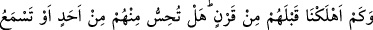
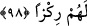

Sanki sûre indirildikten sonra şöyle denilmiştir: İndirilen bu sûreyi tebliğ et, bununla
müjdele ve uyar. Çünkü biz onu apaçık bir Arapça ile indirerek senin lisanında
kolaylaştırdık “ki onunla” yani o Kur’ân’la “muttakîleri” Allâh’ın emir ve yasaklarına
sarılarak takvâya yürüyenleri “müjdeleyesin ve inatçı” yani inadları sebebiyle
Kur’ân’a inanmayan “bir kavmi uyarasın” korkutarak bildiresin ve tebliğ edesin.
“el-Lüdd”, şiddetli düşmanlık ve inatçılık demektir. el-Kâmûs’ta bu kelimenin; aslâ
hakka meyletmeyen hırslı düşman anlamına geldiği ifade edilmiştir. Bir hadîste şöyle
buyrulmuştur: “Allah katında en fazla buğzedilen adam, inatçı düşmandır.”[50]
et-Te’vîlâtü’n-Necmiyye’de şöyle der: “Âyet işâret etmektedir ki, Allâh’ın zâtıyla
kâim, ezelî sıfatı olan Kur’ân’ın hakîkatini; sonradan olan, sayılı, müteşâbih harf
kalıpları kaplayamaz. Çünkü Kur’ân’ın hakîkati, ezelîdir, sayılamaz ve bitip tükenmez.
Ancak Allah Teâlâ, muttakîleri onunla müjdelesin diye Hz. Peygamber (s.a.)’in kalbine
apaçık Arapça ile okunmasını ve anlaşılmasını kolay kılmıştır. Muttakîlerin Kur’ân’la
müjdelenmesinin sebebi, onların buna ehil olmalarıdır.
Muttakîler üç sınıftır:
1. Tevhîdle şirkten korunanlar,
2. İtaatla günahlardan korunanlar,
3. Allah ile Allâh’ın hâricindekilerden korunanlar.
İnatçı bir kavmin Kur’ân’la uyarılmasının sebebi ise onların uyarılma ehli
olmalarıdır. Bunlar da üç gruptur:
1. Bâtıl uğrunda savaşan kâfirler,
2. Nesh edilmiş dinleri uğrunda mücâdele eden kitap ehli (yahudî ve hristiyanlar),
3. Bâtılla hak ehline karşı mücâdele eden hevâ ehli, bid‘at sâhibi ve felsefeciler.
98. Biz, onlardan önce nice nesilleri helâk ettik. Sen, onlardan herhangi birinden
(bir varlık emâresi) hissediyor veya onlara âid cılız bir ses işitiyor musun?
“Biz, onlardan önce nice nesilleri helâk ettik.” Yani bu inatçılardan önce
peygamberleri kendilerini Allâh’ın âyetleriyle uyarıp azab ve helâkiyle korkuttuktan
sonra nice nesilleri helâk ettik. “Sen, onlardan herhangi birinden (bir varlık emâresi)
hissediyor veya onlara âid cılız bir ses işitiyor musun?” yâni o helâk olanlardan birini
hissediyor ve görüyor ya da çok az bir ses işitiyor musun? Hayır. Yani onları tamamen
helâk ettik ve köklerini kuruttuk. Bundan dolayı sen onların hiçbirini görmüyor ve
seslerini duymuyorsun. Çünkü bizim azabımız onlara geldi ve artık onlardan ne bir şahıs
geride kaldı ve ne de bir kimsenin işiteceği gizli bir ses kaldı. İlâhî kahır onlardan
hiçbir kimse ile dost olmadı ve onların tamamını meçhullük ve nisyân cehennemine attı.